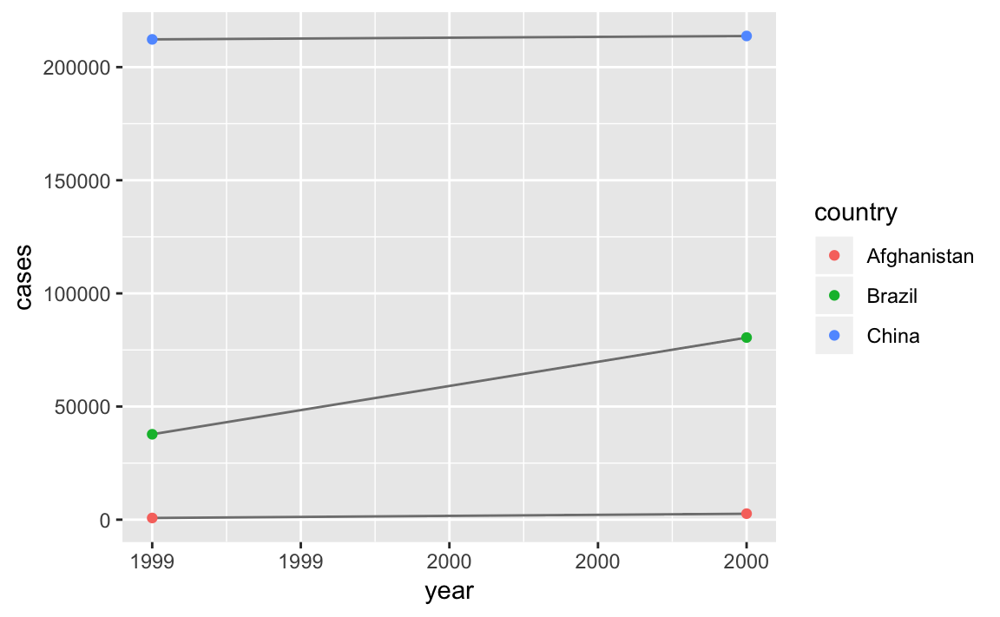
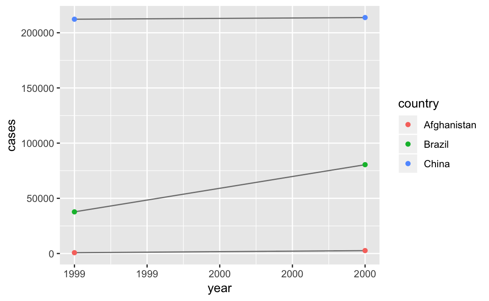

4 Tidy data
4.1 Exercises 12.2.1
Using prose, describe how the variables and observations are organised in each of the sample tables.
table1
#> # A tibble: 6 x 4
#> country year cases population
#> <chr> <int> <int> <int>
#> 1 Afghanistan 1999 745 19987071
#> 2 Afghanistan 2000 2666 20595360
#> 3 Brazil 1999 37737 172006362
#> 4 Brazil 2000 80488 174504898
#> 5 China 1999 212258 1272915272
#> 6 China 2000 213766 1280428583table2
#> # A tibble: 12 x 4
#> country year type count
#> <chr> <int> <chr> <int>
#> 1 Afghanistan 1999 cases 745
#> 2 Afghanistan 1999 population 19987071
#> 3 Afghanistan 2000 cases 2666
#> 4 Afghanistan 2000 population 20595360
#> 5 Brazil 1999 cases 37737
#> 6 Brazil 1999 population 172006362
#> # ... with 6 more rowstable3
#> # A tibble: 6 x 3
#> country year rate
#> * <chr> <int> <chr>
#> 1 Afghanistan 1999 745/19987071
#> 2 Afghanistan 2000 2666/20595360
#> 3 Brazil 1999 37737/172006362
#> 4 Brazil 2000 80488/174504898
#> 5 China 1999 212258/1272915272
#> 6 China 2000 213766/1280428583table4a
#> # A tibble: 3 x 3
#> country `1999` `2000`
#> * <chr> <int> <int>
#> 1 Afghanistan 745 2666
#> 2 Brazil 37737 80488
#> 3 China 212258 213766table5
#> # A tibble: 6 x 4
#> country century year rate
#> * <chr> <chr> <chr> <chr>
#> 1 Afghanistan 19 99 745/19987071
#> 2 Afghanistan 20 00 2666/20595360
#> 3 Brazil 19 99 37737/172006362
#> 4 Brazil 20 00 80488/174504898
#> 5 China 19 99 212258/1272915272
#> 6 China 20 00 213766/1280428583Compute the rate for table2, and table4a + table4b. You will need to perform four operations:
Compute the rate for table2, and table4a + table4b.
You will need to perform four operations:
Extract the number of TB cases per country per year.
Extract the matching population per country per year.
Divide cases by population, and multiply by 10000.
Store back in the appropriate place.
Which representation is easiest to work with? Which is hardest? Why?Extract the number of TB cases per country per year.
t2_cases <- table2 %>% filter(type == "cases") %>% select(-type) %>% rename(cases = count )
t4_cases <- table4a %>% gather(`1999`, `2000`, key = "year", value = "cases")Extract the matching population per country per year.
t2_pop <- table2 %>% filter(type == "population") %>% select(-type) %>% rename(population = count )
t4_pop <- table4b %>% gather(`1999`, `2000`, key = "year", value = "population")Divide cases by population, and multiply by 10000.
t2_rate <- t2_cases %>% left_join(t2_pop, by = c("country", "year")) %>% mutate(count = (cases / population) * 10000) %>% select(-cases, -population) %>% mutate(type = "rate") %>% select(country, year, type, count)
t4_rate <- t4_cases %>% left_join(t4_pop, by = c("country", "year")) %>% mutate(count = (cases / population) * 10000) %>% select(-cases, -population) %>% mutate(type = "rate") %>% select(country, year, count)Store back in the appropriate place.
table2_new <- left_join(table2, t2_rate)
#> Joining, by = c("country", "year", "type", "count")
table2_new
#> # A tibble: 12 x 4
#> country year type count
#> <chr> <int> <chr> <dbl>
#> 1 Afghanistan 1999 cases 745
#> 2 Afghanistan 1999 population 19987071
#> 3 Afghanistan 2000 cases 2666
#> 4 Afghanistan 2000 population 20595360
#> 5 Brazil 1999 cases 37737
#> 6 Brazil 1999 population 172006362
#> # ... with 6 more rows
#table2_new <- bind_rows(table2 %>% mutate(count = as.numeric(count)), t2_rate)
table4c <- t4_rate %>% spread(year, count)
table4c
#> # A tibble: 3 x 3
#> country `1999` `2000`
#> <chr> <dbl> <dbl>
#> 1 Afghanistan 0.373 1.29
#> 2 Brazil 2.19 4.61
#> 3 China 1.67 1.67Recreate the plot showing change in cases over time using table2
instead of table1. What do you need to do first?
table1 %>%
mutate(rate = cases / population * 10000)
#> # A tibble: 6 x 5
#> country year cases population rate
#> <chr> <int> <int> <int> <dbl>
#> 1 Afghanistan 1999 745 19987071 0.373
#> 2 Afghanistan 2000 2666 20595360 1.29
#> 3 Brazil 1999 37737 172006362 2.19
#> 4 Brazil 2000 80488 174504898 4.61
#> 5 China 1999 212258 1272915272 1.67
#> 6 China 2000 213766 1280428583 1.67
table2_s <- table2_new %>% spread(type, count) %>% mutate(cases = as.integer(cases), population = as.integer(population))
table1 %>%
count(year, wt = cases)
#> # A tibble: 2 x 2
#> year n
#> <int> <int>
#> 1 1999 250740
#> 2 2000 296920
table2_s %>%
count(year, wt = cases)
#> # A tibble: 2 x 2
#> year n
#> <int> <int>
#> 1 1999 250740
#> 2 2000 296920
library(ggplot2)
ggplot(table1, aes(year, cases)) +
geom_line(aes(group = country), colour = "grey50") +
geom_point(aes(colour = country))
ggplot(table2_s, aes(year, cases)) +
geom_line(aes(group = country), colour = "grey50") +
geom_point(aes(colour = country)) 

4.2 Exercises 12.3.3
Why are gather() and spread() not perfectly symmetrical?
Carefully consider the following example:
stocks <- tibble(
year = c(2015, 2015, 2016, 2016),
half = c( 1, 2, 1, 2),
return = c(1.88, 0.59, 0.92, 0.17)
)
stocks %>%
spread(year, return) %>%
gather("year", "return", `2015`:`2016`)
#> # A tibble: 4 x 3
#> half year return
#> <dbl> <chr> <dbl>
#> 1 1 2015 1.88
#> 2 2 2015 0.59
#> 3 1 2016 0.92
#> 4 2 2016 0.17(Hint: look at the variable types and think about column _names_.)
Both `spread()` and `gather()` have a `convert` argument. What does it
do?Why does this code fail?
table4a %>%
gather(`1999`, `2000`, key = "year", value = "cases")
#> # A tibble: 6 x 3
#> country year cases
#> <chr> <chr> <int>
#> 1 Afghanistan 1999 745
#> 2 Brazil 1999 37737
#> 3 China 1999 212258
#> 4 Afghanistan 2000 2666
#> 5 Brazil 2000 80488
#> 6 China 2000 213766Why does spreading this tibble fail? How could you add a new column to fix the problem?
Phillip Woods has two record for his age (45 and 50).
people <- tribble(
~name, ~key, ~value,
#-----------------|--------|------
"Phillip Woods", "age", 45,
"Phillip Woods", "height", 186,
"Phillip Woods", "age", 50,
"Jessica Cordero", "age", 37,
"Jessica Cordero", "height", 156
)
people %>%
mutate(id = c(1, 2, 2, 3, 3)) %>%
select(id, everything()) %>%
spread(key, value)
#> # A tibble: 3 x 4
#> id name age height
#> <dbl> <chr> <dbl> <dbl>
#> 1 1 Phillip Woods 45 NA
#> 2 2 Phillip Woods 50 186
#> 3 3 Jessica Cordero 37 156Tidy the simple tibble below. Do you need to spread or gather it? What are the variables?
4.3 Exercises 12.4.3
What do the extra and fill arguments do in separate()?
Experiment with the various options for the following two toy datasets.
tibble(x = c("a,b,c", "d,e,f,g", "h,i,j")) %>%
separate(x, c("one", "two", "three"))
#> Warning: Expected 3 pieces. Additional pieces discarded in 1 rows [2].
#> # A tibble: 3 x 3
#> one two three
#> <chr> <chr> <chr>
#> 1 a b c
#> 2 d e f
#> 3 h i j
tibble(x = c("a,b,c", "d,e", "f,g,i")) %>%
separate(x, c("one", "two", "three"))
#> Warning: Expected 3 pieces. Missing pieces filled with `NA` in 1 rows [2].
#> # A tibble: 3 x 3
#> one two three
#> <chr> <chr> <chr>
#> 1 a b c
#> 2 d e <NA>
#> 3 f g iBoth unite() and separate() have a remove argument. What does it
do? Why would you set it to FALSE?
Compare and contrast separate() and extract(). Why are there
three variations of separation (by position, by separator, and with
groups), but only one unite?
4.4 Exercises 12.5.1
Compare and contrast the fill arguments to spread() and complete().
What does the direction argument to fill() do?
4.5 Exercises 12.6.1
In this case study I set na.rm = TRUE just to make it easier to check that we had the correct values. Is this reasonable? Think about how missing values are represented in this dataset. Are there implicit missing values? What’s the difference between an NA and zero?
What happens if you neglect the mutate() step? (mutate(key = stringr::str_replace(key, “newrel”, “new_rel”)))
I claimed that iso2 and iso3 were redundant with country. Confirm this claim.
For each country, year, and sex compute the total number of cases of TB. Make an informative visualisation of the data.